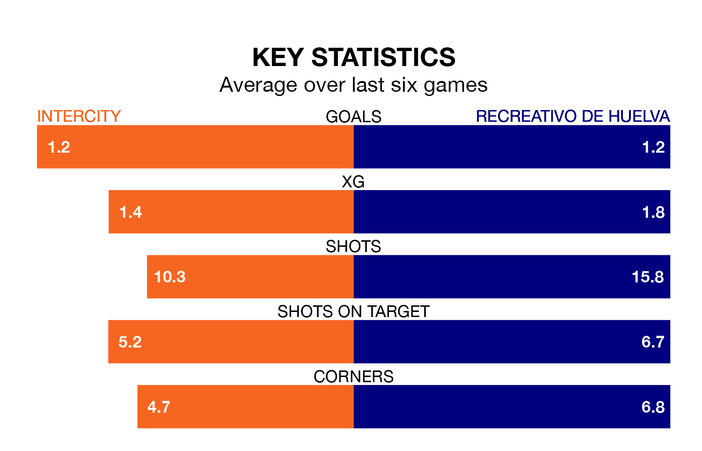

Recreativo de Huelva travel to Intercity on late Sunday in Primera Division RFEF Group 2.
The visitors come into the game on the back of a defeat in their last match, having lost to Linares Deportivo 4-1 at home, with a goal from Pablo Nicolás Caballero Santos.
Intercity, meanwhile, won their last match, 2-1 against CD Atlético Baleares, with their goal scored by Emilio Nsue López.
With Rubén Ramos González between the sticks, Recreativo de Huelva can rely on one of the league's safest pair of hands. He has kept 11 clean sheets in his 22 appearances this season, and no 'keeper has prevented the opposition scoring more often in Primera Division RFEF Group 2.
In Intercity's net, Manuel Herrera Yagüe has four clean sheets in 12 games. He has conceded a goal every 98 minutes, 10% more often than the 104 minutes between goals for Ramos González.
With 36 goals in 34 games so far this season, the hosts are scoring at the league's average rate with 1.1 goals per game. And they are conceding more than average, letting in 41 goals at a rate of 1.2 per game.
The away team are also average scorers, with 1.1 goals per game. They have conceded 1.0 goal per game.
Intercity are in mixed form in Primera Division RFEF Group 2, with two wins and a draw from their last six games.
And also with two wins and a draw over that period, Recreativo de Huelva's form is identical – they have both taken seven points from 18.
Recreativo de Huelva are eighth in the table after 34 games, of which they have won 14 and drawn 10, earning 52 points.
Intercity are three places behind the visitors in 11th, with 12 wins and nine draws putting them on 45 points.
Updated: 10:44 (UTC), 30/04/24